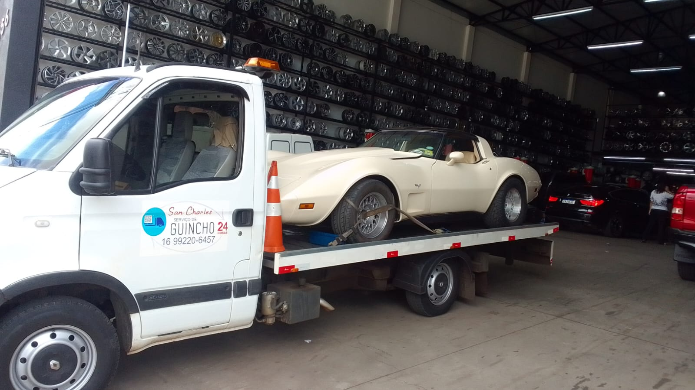

Bem-vindo à San Charles Guinchos - Seu Parceiro Confiável em Serviços de Reboque
Você está em busca de um serviço de reboque rápido, seguro e eficiente? Na San Charles Guinchos, entendemos que imprevistos acontecem e que a necessidade de assistência veicular pode surgir a qualquer momento. É por isso que oferecemos uma gama completa de serviços de reboque para garantir que você esteja sempre em boas mãos, não importa a situação.

Nossos Serviços Incluem:
- Reboque de Veículos de Passageiros: Desde pequenos carros a SUVs, nosso time está preparado para lidar com qualquer tipo de veículo com cuidado e profissionalismo.
- Reboque de Veículos Comerciais: Oferecemos soluções para frotas e veículos de grande porte, minimizando o impacto na sua operação.
- Assistência em Estrada 24/7: Estamos disponíveis a qualquer hora do dia ou da noite para garantir que você receba o suporte necessário quando mais precisar.
- Transporte de Veículos de Alto Valor: Se você possui um carro esportivo ou de colecionador, nossos especialistas em transporte de veículos de luxo garantirão que ele chegue ao seu destino em perfeito estado.
Por que Escolher a San Charles Guinchos?
- Profissionalismo e Experiência: Nossa equipe é altamente treinada e possui anos de experiência no setor, assegurando que cada serviço seja executado com a máxima eficiência e segurança.
- Atendimento Personalizado: Entendemos que cada situação é única, por isso oferecemos soluções sob medida para atender às suas necessidades específicas.
- Tecnologia de Ponta: Utilizamos equipamentos modernos e técnicas avançadas para garantir que o transporte do seu veículo seja feito da forma mais segura possível.
- Preços Justos e Transparentes: Oferecemos uma política de preços clara e competitiva, sem surpresas no momento da cobrança.
Entre em Contato Conosco
Não deixe o seu dia ser arruinado por um imprevisto na estrada. Entre em contato com a San Charles Guinchos hoje mesmo e descubra como podemos ajudar. Ligue para (16) 99220-6457 para obter uma cotação rápida e sem compromisso.
Estamos prontos para ajudar você a voltar ao caminho com confiança!
(16) 99220-6457 Vila Marina - São Carlos SP